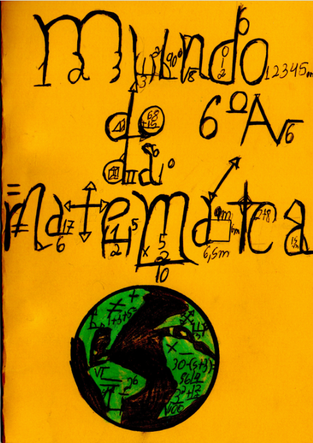

O mundo do 6º A da/na Matemática

1. Números naturais (Julia)
2. Adição de números naturais (Thais)
3. Subtração de números naturais (Luiz)
4. Parênteses, colchetes e chaves (Wesley)
5. Plano Cartesiano (Daniel)
6. Nomes dos polígonos (Isaque)
7. Divisão de números naturais (Lyvia)
8. Representação de uma fração (Isabelle)
9. Ângulos (Pietro)
10. Tipos de ângulos (Ludmylla)
11. Os instrumentos da Geometria (Allyson)
12. Retas Paralelas (Lara)
13. Perímetro de retângulos e quadrados (Alexandre)
14. Adição de números decimais (Guilherme)
15. Subtração de números decimais (Carla)
16. Múltiplicação de números decimais (Kauan)
17. Potênciação de números decimais (Gustavo)
18. Área de retângulos e quadrados (Mayara)
20. Porcentagem (Fernando)
21. Raiz quadrada (Beatriz)
22. Multiplicação e divisão de frações (Ruan)
23. Potenciação de frações (Beatriz)